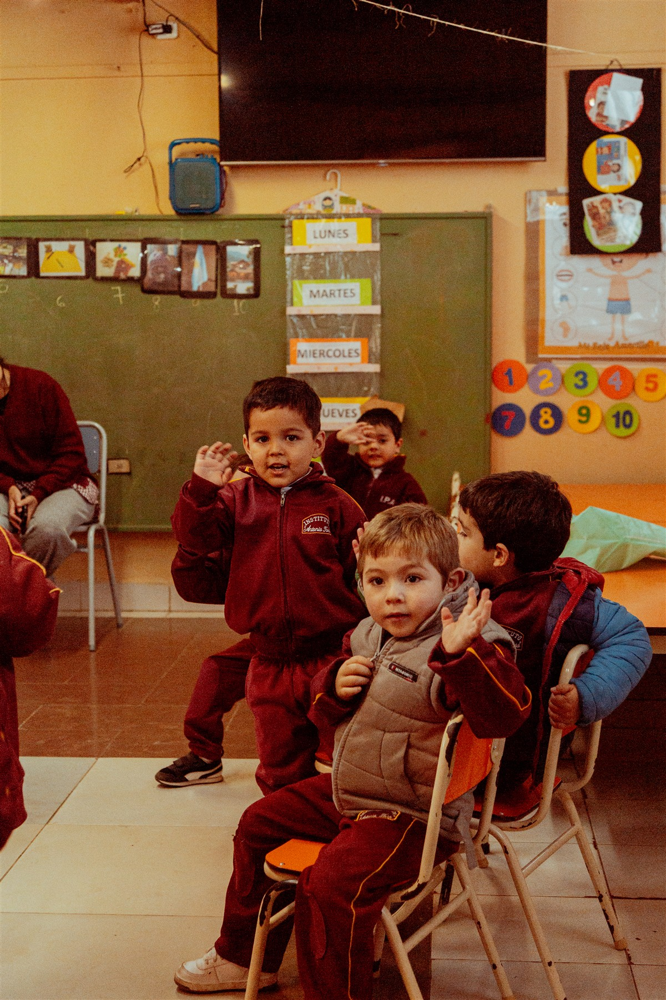

DESCUBRIRConsultar por Inicial
Nivel Inicial
El juego, el afecto y la curiosidad como punto de partida para aprender y compartir.
Conocer la propuesta
Primeros acercamientos a la lectura, la escritura y la matemática, junto con talleres de Inglés y Música. Un entorno cuidado para el desarrollo emocional, social y cognitivo.